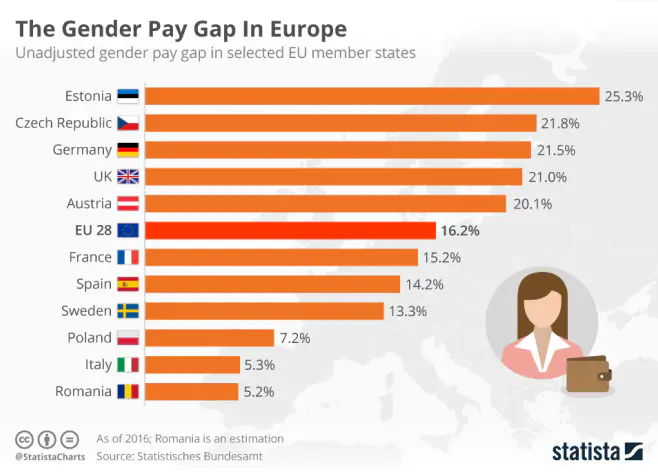

Feminism
is a set of movements that have the goal of promoting equality between men and women in several domains such as (Cultural, Political, Economic, Social and Legal).
The beginning of feminism
Feminism started around the 18th century, the famous century of the Enlightenment, when a French writer Marie Gouze, her nickname is Olympe de Gouges, she is considered one of the pioneers of feminism in France. She writes the Declaration of the Rights of Women and the Citizen in which she asks that the women must had same rights as the men. This request will be refused.
Marie Gouze, known by the nickname Olypme de Gouges. Author of the Declaration of the Rights of Women and the Citizen
But the fight does not stop there. They continued to resist for their rights and in 1860, First-wave feminism began, thousands of women went out in the streets to claim their rights. And this wave was beneficial because as a result, they were given the rights such as the right to work, to vote and to educate. And this wave end in 1945.
Women fight for their right to vote in France
Feminism after the Second World War
After the Second World War women began to obtain more and more rights like the right to vote in 1944 in France, applied from 1945 and for Italy it is in 1945 but in Spain it was not the same thing because they gave the right to vote just for married women, and for Belgium it's in 1948, so we can see that women started to have more and more right.
Women voted for the first time in 1945 in France
and at the level of education it was before, the first woman to have the Bac in France was Julie-Victoire Daubie in 1861.
Julie-Victoire Daubie is the first woman to obtain the French Baccalaureate
And at the level of work the women began to work in 1848 in France but their salary was very lower than the man. That is why in France they are a law voted in 1972, Which obliges the equality of wages between women and men.
And at the work level in Europe, there are also salary inequalities between men and women. Women earn on average 16% less than men in Europe. They have a gap of 21% in Germany and the Czech Republic, and in France, Netherlands and Spain, women earn on average 15.4% less than men, And the country where there are not too many differences between wages it is in Italy where there is a difference of 5% and 3.5% in Romania.

A chart that shows the wage inequalities between women and men
Feminism today
Today there are still feminist movements because women are still discriminated in Europe. As for example at the level of the wages they earn on average 16 % less than the men. If we look at France, we can see that in their legislation there is a law that obliges the equality of salaries between both sexes and if we look at the statistics, we will see that on average women earn 15.1% less than men. And in the level of politique we can see that women are rare in important position. So, all this shows us that women in the 21st century is still discriminated